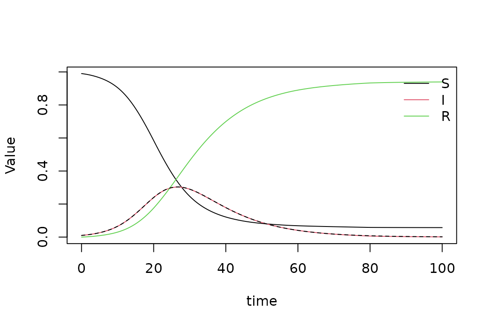
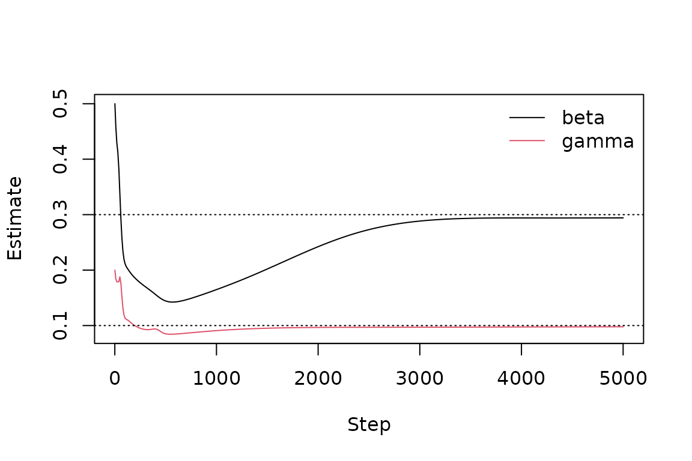

A physics-informed neural network (PINN) is a neural network trained to satisfy a differential equation. Instead of stepping through time like a classical solver, it learns a smooth function whose derivatives make the equation hold at many sampled points, while also matching boundary conditions, initial conditions and, optionally, observed data. Because unknown constants can be learned alongside the network, the same tool solves an equation and estimates its parameters from data.
pinnr does this in native R on top of
torch. This vignette walks through three typical uses:
- solving an ordinary differential equation (ODE) written for
deSolve, - estimating ODE parameters from noisy observations, and
- solving a partial differential equation (PDE).
If you have not used torch before, install its backend
once with torch::install_torch().
1. Solving an ODE from a deSolve model
Here is the classic SIR epidemic model, written exactly as you would
for deSolve::ode():
sir <- function(t, y, parms) {
with(as.list(c(y, parms)), {
dS <- -beta * S * I
dI <- beta * S * I - gamma * I
dR <- gamma * I
list(c(dS, dI, dR))
})
}
y0 <- c(S = 0.99, I = 0.01, R = 0)
parms <- c(beta = 0.3, gamma = 0.1)
times <- seq(0, 100, by = 1)pinn_ode() turns it into a PINN problem. The initial
state is built into the network, so only the equation itself has to be
learned.
prob <- pinn_ode(sir, y0 = y0, times = times, parms = parms)
prob
#> <pinn_problem>
#> Domain: time in [0, 100]
#> Outputs: S, I, R
#> Parameters: beta = 0.3, gamma = 0.1
#> Output transform: yesEpidemics that start from a handful of cases are hard for PINNs over long horizons: a network can find a nearly flat curve with a small residual. Splitting the time range into windows and training them in sequence (“time marching”) avoids this.
fit <- pinn_fit(prob, windows = 5, seed = 1)
fit
#> <pinn_fit>
#> Outputs S, I, R on time in [0, 100]
#> Network 1-32-32-32-3, tanh activation
#> Time marching over 5 windows
#> Trained 5000 Adam steps per window in 235.4 s
#> Final loss (worst window) 4.735e-08 (residual 4.735e-08, conditions 0, data 0)Compare with deSolve:
ref <- as.data.frame(deSolve::ode(y0, times, sir, parms))
pred <- predict(fit)
max(abs(as.matrix(pred[c("S", "I", "R")]) - as.matrix(ref[c("S", "I", "R")])))
#> [1] 0.002089985
plot(fit, type = "solution")
lines(ref$time, ref$I, lty = 2)
2. Estimating parameters from data
Suppose we only observe the infected and recovered fractions every
five days, with measurement noise, and want to estimate
beta and gamma.
set.seed(42)
obs <- ref[ref$time %% 5 == 0, c("time", "I", "R")]
obs$I <- obs$I + rnorm(nrow(obs), sd = 0.005)
obs$R <- obs$R + rnorm(nrow(obs), sd = 0.005)
head(obs)
#> time I R
#> 1 0 0.01685479 -0.008906542
#> 6 5 0.02353904 0.007607310
#> 11 10 0.06721241 0.036184205
#> 16 15 0.14465968 0.089668878
#> 21 20 0.24189748 0.173530409
#> 26 25 0.29943608 0.312187441Give starting guesses in unknown and the observations in
data. The derivative function is unchanged;
beta and gamma are now learned.
inv <- pinn_ode(sir, y0 = y0, times = times,
unknown = c(beta = 0.5, gamma = 0.2), data = obs)
fit_inv <- pinn_fit(inv, epochs = 5000, seed = 1)
coef(fit_inv)
#> beta gamma
#> 0.29416921 0.09781107The true values are beta = 0.3 and
gamma = 0.1. The estimates’ path during training is useful
for judging convergence:

Observations do not have to cover every state: here S
was never observed. Missing values (NA) in
data are also ignored, so different states can be measured
at different times.
3. Solving a PDE
For PDEs, describe the domain, the residual and the conditions
directly. The residual is an ordinary R function whose arguments are
matched by name to outputs (u), variables (x,
t) and parameters (a). The function
d() takes derivatives: d(u, t) is
and d(u, x, x) is
.
The heat equation on , with and at both ends, has the exact solution .
heat <- pinn_problem(
domain = pinn_domain(x = c(0, 1), t = c(0, 1)),
outputs = "u",
residual = function(u, x, t, a, d) d(u, t) - a * d(u, x, x),
conditions = list(
pinn_initial(function(x) sin(pi * x), time = "t"),
pinn_dirichlet(where = list(x = "both"), value = 0)
),
parms = list(a = 0.1)
)
fit_heat <- pinn_fit(heat, epochs = 5000, seed = 1)
grid <- expand.grid(x = seq(0, 1, length.out = 51), t = seq(0, 1, length.out = 51))
pred <- predict(fit_heat, grid)
max(abs(pred$u - exp(-0.1 * pi^2 * grid$t) * sin(pi * grid$x)))
#> [1] 0.006326235
plot(fit_heat, type = "solution")residuals() shows where the equation is satisfied least
well, which is a useful diagnostic when no exact solution is
available:
Tips
-
Write tensor-friendly code. Inside residual,
condition and ODE functions the arguments are torch tensors. Arithmetic
and functions such as
sin,exp,logandsqrtwork;if,ifelse,maxandpminon these values do not. -
When the loss stalls, try more
epochs, a larger network (hidden), more collocation points (n_collocation), or follow Adam with L-BFGS (lbfgs_iter = 500).plot(fit)shows the loss history. - Scale your problem. PINNs train best when inputs and outputs are of order one. Inputs are rescaled automatically; rescale outputs that are very large or small.
-
Saving. Use
pinn_save()andpinn_load(), because torch modules cannot be saved withsaveRDS()alone. -
Hardware. Pass
device = "cuda"ordevice = "mps"to train on a GPU.